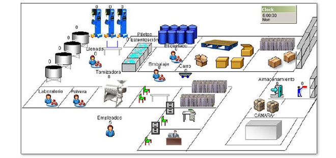
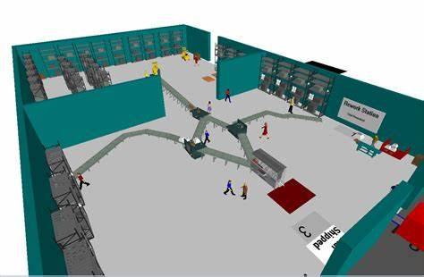

<!DOCTYPE html>  
    <html>  
    <head>  
    <meta charset="utf-8">  
<link rel="Stylesheet" type="uno/css" href="css/estilos3.css"/>
    <link rel="stylesheet" href="estilos.css"/>
    </head> 
   
    <body>  
    <footer>
    <div>
    <header><center>
    <h1> MODELAMIENTO </h1>
</center>
    </header>

</footer>
<footer>
    <nav><center>

   <a href="index.html">SIMULACION</a>&nbsp &nbsp
   &nbsp &nbsp<div>
            
        </div></center>
  </footer>

    <footer>
 <br>


    <center><h1>Planteamiento del modelo</h1></center>

    <hr>
    <p>
Existen diferentes metodologías de modelado, las cuales están 
asociadas al tipo de modelo matemático que vaya a emplearse en el 
estudio. Una característica común a la mayoría de las metodologías de 
modelado es que promueven que el modelo se desarrolle de manera modular y jerárquica.

El modelado modular de un sistema se realiza siguiendo básicamente 
los tres pasos siguientes:
<br>
<ul>
<li>1. Analizar la estructura del sistema e identificar sus distintas 
partes.</li>

<li>2. Describir la interacción entre las partes.</li>

<li> 3. Describir el comportamiento interno de cada parte 
independientemente de las demás.</li>

<p>El modelado modular facilita el planteamiento, desarrollo, verificación 
y validación de los modelos, ya que es más sencillo llevar a cabo estas 
tareas sobre pequeños submodelos que sobre modelos de grandes dimensiones.</p>
<hr>
<table border="4"width="100%">
  <tr>
  <td>La modularidad </td>
    <th>es la capacidad de describir cada una de las 
partes del modelo de forma independiente.
    </th>

    <td>La componibilidad </td>
    <th>es la capacidad de describir y realizar el 
ensamblaje entre las partes del modelo
 
    </th>

    <td>La abstracción</td>
    <th>es la posibilidad de usar cada parte del modelo 
sin conocer sus detalles internos.
<th>
    </th></tr></table></ul>
    </article>
    </section>

    <p>Una forma de facilitar la abstracción consiste en diferenciar, en cada 
parte del modelo, entre la interfaz y a descripción interna.</p>

<br>
<ul>
<li>1. La interfaz es la parte que describe la interacción del modelo con 
su entorno, a la vez que aísla éste de la descripción interna del 
modelo, de modo que pueden ser considerados separadamente. </li>

<li>La descripción interna del modelo contiene la información 
acerca de la estructura y el comportamiento.</li>

<center><h1>Encapsulado de la información</h1></center>

    
    <p>
consistente en que sólo las variables pertenecientes, a la interfaz sean accesibles desde el exterior del módulo por otros módulos La descripción modular y jerárquica del modelo conduce a dos tipos de submodelos: los primitivos y los compuestos.
<br>
<ul>
<li>1.Los submodelos primitivos o atómicos no están compuestos 
por otros submodelos y describen mediante ecuaciones el 
comportamiento de los componentes del proceso.</li>

<hr>
<li>2.Los submodelos compuestos o moleculares están constituidos por otros submodelos, primitivos o compuestos, y las conexiones entre ellos.</li></p>

 <td>submodelos primitivos o atómicos</td>
   
<th>

    <br>
<hr>
    <td>submodelos compuestos o moleculares</td>
   
<th> </br>
    
    <center><h1> Diseño de los experimentos</h1></center>

    <br>
    <th>
<ul>
<hr>
<li><strong>Diseño experimental preliminar.</strong> Tan pronto como sea posible, 
deben seleccionarse qué medidas del comportamiento del 
sistema van a usarse en el estudio, qué factores van a variarse y 
qué niveles de cada uno de estos factores van a investigarse. 
Esta información es relevante para el diseño del modelo.</li> </th>

<br>
    <th>
<ul>
<li><strong>Diseño experimental final. </strong> Una vez el modelo ha sido desarrollado, verificado y validado, se revisa el diseño experimental teniendo en cuenta el conocimiento que se ha ganado durante el proceso de diseño, construcción, verificación 
y validación del modelo.
</li> </th>

<center><h1>  Verificación y validación</h1></center>

    <br>
    <th>
    <hr>	
<ul>
<li><strong>La validación</strong> consiste en comprobar que el modelo es una aproximación “adecuada” (conforme a los objetivos del estudio 
de simulación) del sistema.</li>

<br>
<p>Existen varios procedimientos de verificación, entre los Cuales cabe destacar los siguientes.</p>

<li>Verificar manualmente</li>

<li>Comprobar submodelo a submodelo.</li>

<li> Comparar con soluciones conocidas.</li>

<li> Realizar test de sensibilidad. </li>

<br>

<p>La validación del modelo es un proceso continuado durante su diseño, desarrollo y uso. La confianza en la validez del modelo va acumulándose según este va demostrando su utilidad para el propósito específico para el cual ha sido desarrollado.</p>

</footer>
</footer>
<center>
<p> Pagina original 2022 creada por los mejores</p>
</center>
<footer>
    


